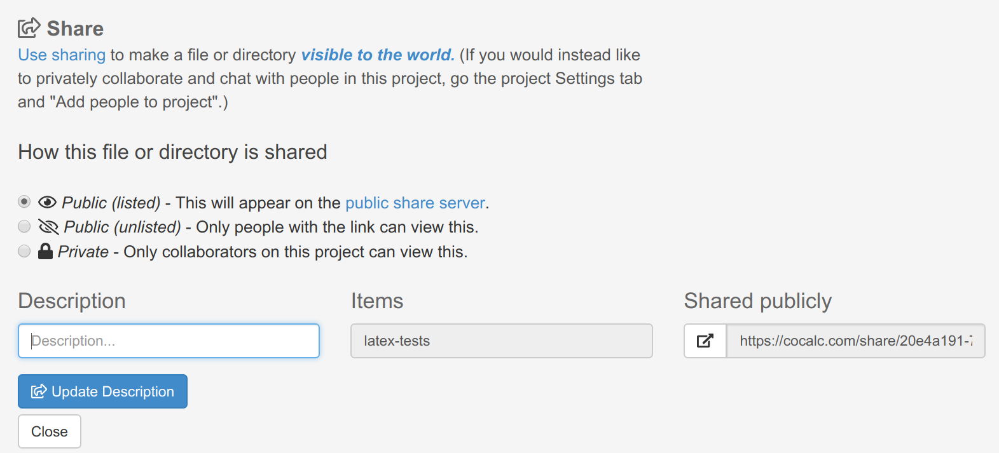

Shared Files
Files and folders published (shared) to CoCalc’s share server are viewable by the public with no login required.
Viewing Files on the Share Server
To see CoCalc files that people have shared, browse to https://cocalc.com/share. You can search for text in the title and contents of shared files using the search box at upper right. You can sort the list of files by any of the columns listed, in increasing or decreasing order, by clicking in the column headings.
Note
For your convenience, note the input box at the top of the browsable documents list: “Share what you create in CoCalc or paste a URL from anywhere on the web of a notebook, GitHub repo, or markdown file”.

search and sort shared files at share server home page
There is also a preview at the CoCalc home page, allowing people who are just learning about CoCalc to view a sample of shared files:

preview of shared files on CoCalc home page
When you select a shared folder, you get a view of the contents. Click “Edit” to copy a shared file or folder to a project that you own or collaborate on.
listing of shared folder “k3d”
Publishing Files
You can make individual files and folders public. First, do either of the following:
With the file open, click the lock icon
 at upper right. Note: if you see the bullhorn icon
at upper right. Note: if you see the bullhorn icon  instead of the lock, that means your file is already shared; you could click it to change sharing settings.
instead of the lock, that means your file is already shared; you could click it to change sharing settings.

click lock icon to enter file-sharing dialog

lock is replaced by bullhorn if file is already shared
In the Files listing for your project, check the box in the leftmost column for your file, and click
 Share. You can also select more than one file in order to share them together (e.g. an HTML page that includes images)
Share. You can also select more than one file in order to share them together (e.g. an HTML page that includes images)
After either of these steps, you can see the “Share” dialog.
You may enter a description for the file being shared,
then click Make item public and your file is shared.
In addition to the above settings, you may specify an optional public file name. Setting this name provides much nicer URL’s for shared public documents. See Vanity URLs below to learn more.
Vanity URLs
You can now make it so
https://cocalc.com/name-of-your-choice (e.g.,
https://cocalc.com/wstein) lists all of the documents you have shared
publicly.
CoCalc lets you assign a username, project names, and file names, so that you can create links to shared files that are easy to type and remember.
Set your username in Account Preferences.
Set your project name in Project Settings.
Set your file name as shown in Publishing Files.
If you set all these you get a nice url, e.g., https://cocalc.com/wstein/support/examples
View Your File on the Share Server
After clicking Make item public as above, the public URL will be displayed under Shared publicly.
You can click the  button to open it at the share server.
button to open it at the share server.
With that link, a read-only copy of your file is available on the CoCalc share server. Files on the share server are indexed by Google unless you click the checkbox next to “Unlisted: Only allow those with a link to view this.”.
Starring Shared Files
You can star shared public files on the share server and see everything you starred here: https://cocalc.com/stars.

star a shared file so you can find it easily later
When you click “Star”, the count increases by one and the prompt changes to “Starred”. You can undo the operation by clicking “Starred”, after which the star count will decrease by one.
click “starred” to remove a previously-added star
File Sharing Tips
You can share files from a free CoCalc account. At one time, the Internet access upgrade was required in order to share files; this is no longer the case.
If your document depends on auxiliary files (e.g., images embedded in a markdown file) make sure these auxiliary files are also published. A convenient way to do this is to have auxiliary files in a common folder and share that folder.
Serving raw files: you can host arbitrary html, etc. through the share server. Files can be viewed in “raw” form, i.e. without CoCalc controls, by opening in the share server and clicking “Raw” at upper right.
Interactive elements that use server processes, such as notebooks with Jupyter widgets and worksheets with Sage
@interact, will not operate in files viewed from the share server. That is because documents on the share server are truly static. There is no kernel or Sage server running in the background to facilitate any sort of interactive computing. Controls that run completely in the browser work when served from the share server, for example 3d plots like this cardioid.

{kind=link}
{kind=link}
{kind=link}